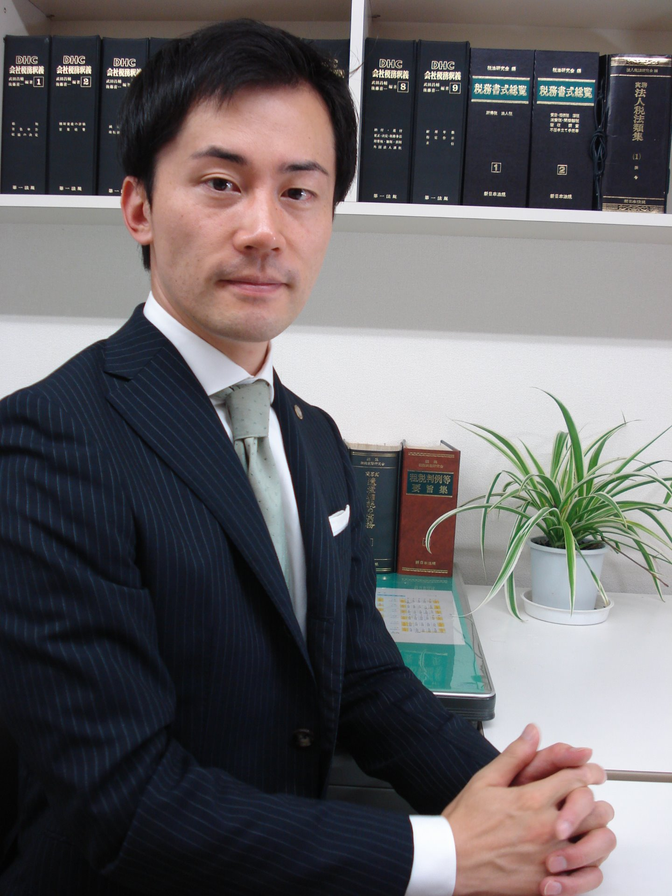

長野県内の住宅地は、1.2％の増加となりました（前年0.8%）。
--Last Update 2026/4/15--
企業経営と相続のための「しなの税理士事務所」です。
今年も新緑の季節になりました。桜（ソメイヨシノ）は早くも散ってしまいましたが、足元のリュウキンカやタンポポの黄色に春の訪れを感じます。新年度、何かと気忙しいこの時期ですが、皆様がお気持ち爽やかにお過ごしになれますよう祈念しております。

しなの税理士事務所 代表税理士 村田 圭介
はじめまして。長野県長野市の税理士 村田圭介です。
この度は、当税理士事務所のホームページにお越しいただき、誠にありがとうございます。
私は首都圏で税理士としての研鑽を積み、平成23年7月、独立を機に生まれ故郷である信州に戻り、「しなの税理士事務所」を開設いたしました。
これまで税理士として様々な社長様とお会いし、お話しさせていただきながら、どうしたら本当の意味で経営のお役に立てるのかを試行錯誤する中で、大切なことをたくさん教えていただきました。
現在の経済情勢では、会社を存続させることだけでも大変です。お金も人材も限られている中小企業のサポートを本気で考え、経営者様のお考えを整理しながら、ご一緒に経営計画を立て、実行していくことを心掛けております。
「会社を良くするために何をして良いのか分からない、だから真剣に取り組みたい」とお考えの経営者の皆様のお手伝いができることを、心より楽しみにしております。
平成23年7月
おかげ様をもちまして、当事務所は開業10周年を迎えることができました。
この間、お客様、金融機関様、提携企業様の格別のお引き立て賜り、順調に発展することができましたこと、この場をお借りいたしまして厚く御礼申し上げます。
開業当初より「黒字経営とあんしん相続」をコンセプトに、法人税務および相続税務に力を入れて業務を行い、「東京の一流事務所と同じサービスを、長野価格で」をモットーに、地域一番のサービスをご提供できるよう努力してまいりました。
しなの税理士事務所は、次の20周年に向けて、より質の高いサービスをご提供してまいります。
これからもご指導・ご鞭撻のほど、よろしくお願い申し上げます。
令和3年7月 しなの税理士事務所 代表 村田圭介
所属団体
■ 関東税理士会長野支部
■ ＴＫＣ全国会
※当所では個人事業の受任は行っておりません
当所の基本業務です。毎月ご訪問し、「 月次試算表 」 を作成し、内容をきちんとご説明します。
今どれくらい儲かっているのか・損しているのか、何が問題なのかを把握することができ、安心経営には必須です。金融機関からの信頼もアップします。
また、毎年6か月目には必ず 「 業績検討会 」 を行い、予算の実行状況をご一緒に確認し、後半期の打ち手を考えます。
金融機関、税務署から信頼性の高い決算書を作成します。また、決算の2か月前には必ず 「 決算対策会 」 を行い、安心して決算を迎えられます。
・赤字なら、赤字幅を小さくするための対策を立て、
・黒字なら、税額を予想し、節税対策を練り、実行します。
申告はすべて電子申告対応です。
決算毎に税法に基づいた自社株の株価を算定いたします。自社株の株価推移を把握することは、事業承継対策に必須です。
簡単にいえば、予算のことです。これまでの経験から、 「 予算を立てない会社は決して黒字決算を続けることはできない 」 と確信しています。
毎決算後に、翌年分と、5年分の 「 実効性の高い経営計画 」 をご一緒に作成します。金融機関からの信頼度も非常にアップします。
事業を行っていれば、避けて通れないのが税務調査です。当所のお客様には、事前に十分な準備・練習をし、当日は必ず所長の村田が立会います。
税務署に対し、税法に基づき納得度の高い説明をします。
設立に当たって、最初はわからないこと、不安なことが多いものです。会社設計において、後から税制面で思わぬ失敗をしていたことに気づくこともあります。
当事務所では、司法書士・行政書士・社労士等と連携して、最も合理的な会社の立ち上げをお手伝いします（株式会社、合同会社など）。個人事業者からの 「 法人成り 」 につきましてもご相談ください。
会計ソフトの導入を検討していらっしゃる場合には、どなたでも簡単に（本当に!）入力ができる会計ソフトで、 無理なく会計入力が行えるようにご支援します。
できるまで、徹底的にお手伝いします。当税理士事務所では、御社にとってベストな合理化をご提案いたします。
そのままでは相続税が課税されてしまう遺産規模であっても、税金の各種特例を適用して期限内に申告することによって無税になることも多々あります。
不動産や銀行口座のみならず、お亡くなりになることによって無数の名義変更手続きが必要になります。
ストレスなくすべての名義変更ができるようお手伝いいたします。
ご自身がお亡くなりになることによって、どれくらいの遺産が残るのか、それに相続税がどれくらいの相続税が課税されるのか、試算します。
財産の分け方によって、どれくらい税額が違うのか、シミュレーションします。遺言を作成するお手伝いもいたします。
将来の相続税節税のための贈与プランを立てます。よかれと思って過去に行った生前贈与が、書類・形式の不備から、お亡くなりになったときに税務署からダメといわれることもあります。
当所では事前にきちんと形式を整え、万全の書類を作成します。
しなの税理士事務所の報酬料金体系は下記のとおりです（別途消費税等）。
業務の詳細は「業務内容」のページをご覧ください。
■月次報酬（業績検討会を含む）
※当所では個人事業の確定申告はお受けしておりません
| 月額 | 30,000円〜 |
|---|
上記の価格には、処理手数料、TKC会計システム料だけではなく、税理士としてご提供する「責任と安心（予算設定・管理、決算対策）」が含まれています。これまでの経験から、予算を立てない黒字経営は不可能と考えております。
※当事務所のお客様の黒字割合は約6割です（令和2年3月現在：全国平均は約3割）。
■決算・申告（税務調査立会を含む）
| 決算書類調製 | 上記月次報酬の2か月分 |
|---|---|
| 法人税申告 | 上記月次報酬の4か月分 |
| 消費税申告 | 上記月次報酬の2か月分 |
■申告報酬（税務調査立会を含む）
| 相続財産の1％ | — |
|---|---|
| （例）相続財産が7千万円 | 70万円 |
（ご参考）東京での相場は約1.5〜2%といわれています。
■その他
| 名義変更手続きのお手伝い | 50,000円〜 |
|---|---|
| 相続税対策 | 80,000円〜 |
| 財産評価 | 80,000円〜 |
名義変更：預金名義変更など
相続税対策：生前贈与方法のご提案（贈与税申告報酬を含みます）
財産評価：簡易シミュレーション
事前にご自身の財産を整理、相続税額を試算したい方にご好評いただいております。
借入金を返済しているからです。
会計上、借入金の返済は経費とはならないので、 「 利益＝お金が増える 」 ことにはなりません。
大ざっぱには考えますと、「 利益＋減価償却費－借入金返済額 」 が、お金の増加になります。
毎月の試算表は、健康診断の結果通知表のようなものです。ここに自社の健康の兆候が表れていますから、その内容がわからないのは困ったことです。
当事務所では、簿記の知識がない社長さんにも、試算表のどこを見るべきか、何を把握すべきか、毎月きちんとご説明します。
数字に強い＝簿記ができる、ということではありません。特に経営者の方が簿記を勉強し始めますと、 「 木を見て森を見ず 」 ということも時々起こります。
むしろ、 「 自社の会計状況を大きく把握し、自分の言葉で説明できる 」 ということが、経営者にとっての「数字に強い」ということであると考えます。
中小企業の社長さんに 、どうしても把握しておいていただきたい 「 5つの指標 」 があります。当事務所のお客様には徹底して 「 自社の数値・理想の数値 」 を頭に叩き込んでいただいています。
世の中には数えきれないほどの経営分析指標がありますが、そのすべてが中小企業にとって必要なものではありません。「 5つの指標 」 を押さえておくだけで、自社の健全性（危険性）を把握するのにも、金融機関との話し合いにも十分です。
同業同規模の黒字企業の数値を参考にして、自社の財務状況の問題点を洗い出し、修正していくのが早道です。
理想的かつ現実的な目標値と、自社の数値を比べることにより、自社の問題点が明らかになります。次に、目標値に近づくための打ち手を考え、実行していきます。
もちろんです。節税には大きく分けて4つの手法があります。お客様の状況に合わせた節税プランを立て、実行のお手伝いをいたします。
100人中、約18人の方が相続税の申告をしています。そのうち相続税を実際に支払っている方は約7人、各種特例を使うことによって相続税額をゼロとして申告している方が約11人と言われています（東京国税局管内 平成20年）。
金銭に置き換えられるものは、ほとんどが相続税の対象となります。たとえば、預貯金、土地建物以外にも、株や投資信託、車や家具、会員権、絵画、生命保険金や死亡退職金も課税対象となります。
一方で借金やローン、葬儀費用はマイナスの財産ですので、上記のプラス財産から差し引くことができます。
上記プラスの財産から借金などのマイナス財産を差し引いた額が「基礎控除額※」を超える場合には、原則として相続税の申告をする必要があります。ですから、まず財産と借金の有無、相続人などについてきちんと整理することが大切です。
※「3,000万円＋法定相続人×600万円」
（例）法定相続人がお2人の場合は3,000万円+600万円×2人＝4,200万円となります。
「相続のお尋ね」が来た場合、必ず何らかの形で税務署に返答しなければなりません。まず、故人の財産・債務をまとめて、税務署か最寄りの税理士にご相談なさってください。
相続財産が基礎控除額の範囲内であれば、「お尋ね」の用紙に財産・債務の概要を記入し、提出します。基礎控除を超える場合には、同封の申告書を使って、お亡くなりになった日から10か月以内に相続税の申告をする必要があります。
どの税理士事務所でも見積りは無料だと思いますので、何人かの税理士に相談して、ご自身で一番信頼できそうな税理士に依頼されるとよいと思います。
遺産の額や難易度によって変わってきます。地域によっても違いますが、長野ですと大体50万円位からになると思います。当所の報酬料金は料金のページをご覧ください。
口座の名義人が亡くなられると、その時点で預金を下ろすことはできなくなります。その場合、相続人全員で「遺産分割協議書」を作成して金融機関に提出すると、預金を下ろすことができるようになります。
一般的にはすべての財産をまとめて分割協議をするため、預金を下ろせるようになるのは大分先になってしまいます。どうしてもすぐに預金を下ろしたい場合には、取り急ぎ、その預金だけの協議書をお作りすることもできます。
各金融機関によって若干手続き・書式は異なりますが、当事務所では、県内の各銀行さんの手順をマニュアル化しておりますので、お気軽にお尋ねください。
分割で払うことができます（延納といいます）。ただし利息がかかります。分割の期間と利息は、遺産に占める不動産の割合により変わります。
たとえば、不動産が半分以上の場合には、期間は最長15年、利息は年2%くらいです。
※各銀行さんでも上記の利率より安い融資を用意していることもありますので、当事務所にお気軽にご相談ください。さらに、物納という方法もあります。
お亡くなりになった後ですと、打ち手は非常に限られてきます。それでも、遺産の分け方を工夫したり、税制上の特例をうまく適用しますと、相続税の額を押さえることができます。
生前であれば、様々な方法で相続税を軽減することが可能です。ほとんどの税理士にとって、相続税の申告は年に1件あるかないかの頻度ですので、経験と自信のある税理士に依頼することも重要です。当事務所では、各方法による節税シュミレーションもご提供しています。